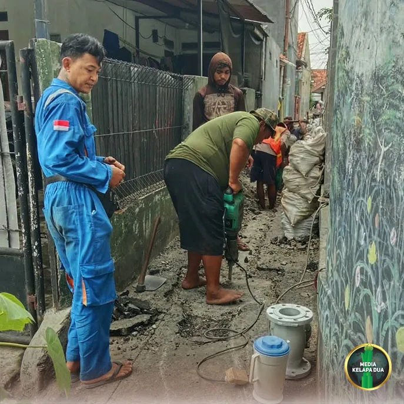

Berita Utama

Hidran Mandiri Perkuat Sistem Proteksi Kebakaran
Tanggal, 9 Oktober 2026
MediaKada | Upaya meningkatkan kesiapsiagaan masyarakat dalam menghadapi potensi kebakaran terus dilakukan. Salah satunya melalui pembangunan Hidran Mandiri oleh Suku Dinas Penanggulangan Kebakaran dan Penyelamatan (Gulkarmat) Kota Administrasi Jakarta Barat di wilayah RW 08 Kelurahan Kelapa Dua, Kecamatan Kebon Jeruk, Jakarta Barat
MediaKada | Pembangunan fasilitas tersebut berlokasi di lahan milik Pemerintah Provinsi DKI Jakarta yang berada di samping Sekretariat RW 08, Gang Kayumanis IV RT 005/08 Kelapa Dua. Proyek ini merupakan bagian dari program penguatan sistem proteksi kebakaran lingkungan yang ditujukan untuk meningkatkan keselamatan warga, khususnya di kawasan permukiman padat penduduk.
Pembangunan Hidran Mandiri direncanakan berlangsung selama 90 hari kalender dengan sumber pendanaan dari Anggaran Pendapatan dan Belanja Daerah (APBD) Provinsi DKI Jakarta sebesar Rp 2.312.627.641. Pelaksanaan pekerjaan dipercayakan kepada PT Hanania Arihta Persada.
Fasilitas Hidran Mandiri yang dibangun meliputi satu unit rumah pompa, reservoir, toren berkapasitas 14.000 liter, jaringan perpipaan air, box hidran, serta pompa kebakaran yang akan mendukung operasional sistem pemadaman kebakaran di wilayah setempat.
Keberadaan Hidran Mandiri ini diharapkan mampu meningkatkan sistem proteksi kebakaran lingkungan, mempercepat waktu respons penanganan kebakaran, serta meminimalkan risiko dan kerugian yang ditimbulkan akibat kebakaran, terutama pada wilayah yang sulit dijangkau armada pemadam berukuran besar.
Nantinya, fasilitas tersebut akan dikelola oleh masyarakat setempat sebagai sarana penanganan awal atau pertolongan pertama saat terjadi kebakaran, sebelum petugas profesional tiba di lokasi kejadian. Dengan demikian, warga memiliki kesiapan dan kemampuan yang lebih baik dalam menghadapi kondisi darurat.
Pembangunan Hidran Mandiri ini merupakan hasil usulan yang diajukan oleh Pengurus RW 08 bersama masyarakat setempat serta didukung oleh Kelurahan Kelapa Dua kepada Suku Dinas Penanggulangan Kebakaran dan Penyelamatan (Gulkarmat) Jakarta Barat. Cakupan layanan fasilitas ini dirancang untuk melayani kawasan padat penduduk yang meliputi RT 002, RT 004, dan RT 005 di wilayah RW 08, serta Rt 006 dan RT 007 di wilayah RW 03 Kelurahan Kelapa Dua.
Selain berfungsi sebagai sarana penanggulangan kebakaran, keberadaan Hidran Mandiri juga dapat dimanfaatkan untuk mendukung kegiatan kerja bakti lingkungan dan membantu memenuhi kebutuhan pasokan air bersih masyarakat, terutama saat terjadi krisis air maupun kebutuhan sosial lainnya.
Dengan hadirnya Hidran Mandiri di RW 08 Kelapa Dua, diharapkan ketahanan lingkungan terhadap risiko kebakaran semakin meningkat serta memberikan manfaat yang luas bagi masyarakat dalam menjaga keselamatan, kenyamanan, dan kualitas hidup warga.